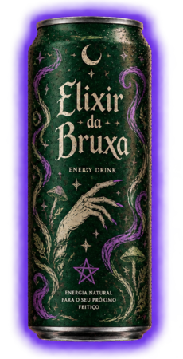
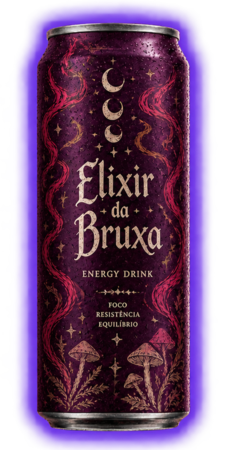

CONHEÇA NOSSOS ELIXIRES
Cada poção tem seu propósito. Descubra a essência que acompanha melhor seus rituais.

ELIXIR DA FLORESTA
Uma poção inspirada nos segredos da mata, onde raízes antigas guardam histórias e a névoa repousa entre as árvores. Amoras silvestres, maçã verde e ervas da floresta se unem à misteriosa Seiva de Lunária, colhida sob o luar. Uma essência criada para celebrações ao redor do fogo e jornadas pela noite.
Uma essência inspirada nos segredos da mata, perfeita para noites ao redor do fogo. Amoras silvestres, maçã verde e ervas da floresta se unem à misteriosa Seiva de Lunária, colhida sob o luar.

ELIXIR DO ECLIPSE
Nascido sob o véu de um céu sem estrelas, este elixir combina notas profundas de mirtilo e uva negra ao toque floral do hibisco. Seu segredo repousa no Orvalho de Eclipse, uma essência lendária recolhida das flores durante o alinhamento entre o sol e a lua. Uma poção para os rituais noturnos e as madrugadas guiadas pelas estrelas.
Mirtilo, uva negra e hibisco se encontram nesta poção nascida sob um céu sem estrelas. Seu segredo é o Orvalho de Eclipse, uma essência lendária colhida durante o alinhamento entre o sol e a lua.